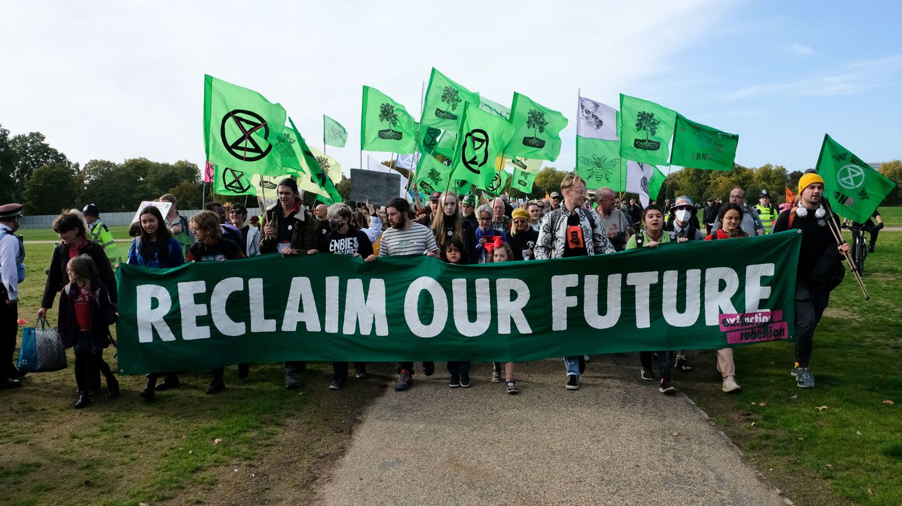

My friend's name is Bruce. He lives in Seattle and works for an environmental non-profit, which is dedicated to preserving our planet’s resources.
We are committed to educating communities about global warming and sustainable practices. Our focus includes:
In 2001, I organized a rally to protest the rising surface temperatures affecting our land. That day sparked my lifelong passion for environmental activism, and I’ve been working ever since to help people understand the impact of our actions on the planet.
Discover Oregon’s natural beauty, learn about the latest environmental news and events, and find out how you can support our cause. Contact us to join the movement!